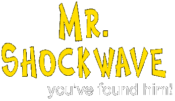

|  |
Welcome to Mr. ShockWave... Your Shockwave Specialist !
Keeping you shocked! |
"Daddy, daddy, we've gone to war with Serbia, isn't it cool" said a kiddo to his dad last night. This is the typical reaction of kids in America. They all think it's cool or awesome that they have gone to war. Now they can watch TV and get live images of planes bombing Kosovo. They don't know whats really going on, they don't know about the truth, they don't know about the war. In 1914, the first World War broke out in a place called the Balkan, the region where former Yugoslavia is located. Then in 1939, the second world war broke out, which also caused unrests in the Balkan region. Now, its going on again, it's starting all over again. Another "little" war in the Balkan that has the potential to grow out until the nightmare of us all... World War III.
Russia and China have already formely opposed the actions taken by NATO against the Serbs. If they will choose the site of the Serbs and declare war to NATO, then we have entered the first stage of World War III.
Don't let it go this far... react in time.. tell your governments to stop the war.
Don't let this war go by asif it is nothing, it might not be this one that causes a worldwide conflict, but it might be the next one, or the one after that... let the truth shock you.